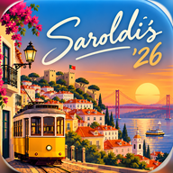

Guias e planners
As viagens
por Claudio SAROLDI
Guias de bolso
Para o celular. Funcionam sem internet e se instalam como app.

Lisboa 2614 nov a 13 dez 2026 · sem pressa, outra vez
→
Budapeste15 a 19 out 2026 · com a Mona
→
ArquivoOs guias anteriores, guardados como ficaram
→
Planners
Para o laptop. Cada um monta os seus dias e manda o plano.
LisboaMonte os seus dias · 14 nov a 13 dez 2026
→
BúziosMonte os seus dias · 17 a 24 jan
→
OrlandoMonte os seus dias · 2027
→